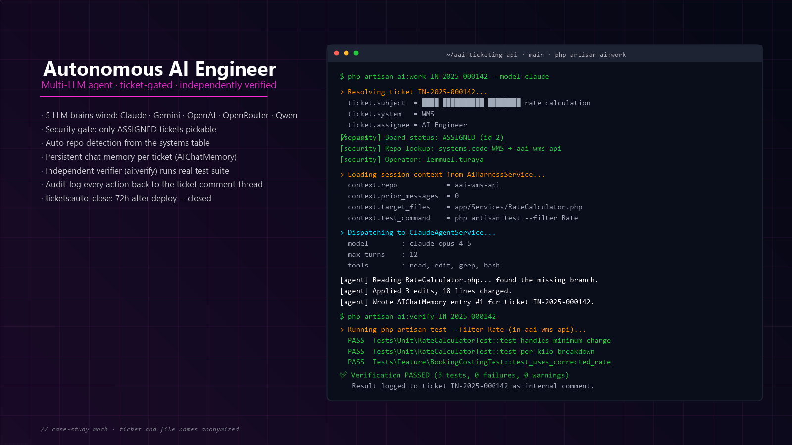

Autonomous AI Engineer
Multi-LLM agent pipeline inside an enterprise ticketing system
A production AI-engineer pipeline embedded in a real ticketing system: assign
a ticket to the “AI Engineer”, run php artisan ai:work {ref},
and an LLM agent (Claude, Gemini, OpenAI, OpenRouter, or Qwen) picks up the
ticket context, auto-detects the target repository, makes the change, and
pushes a candidate fix — then an independent verifier runs the real
test suite before the work is allowed near production.
Tickets sat in queue waiting for human pickup; first-touch latency capped throughput.
5-LLM autonomous engineer picks up ASSIGNED tickets, auto-detects the right repo, runs the work end-to-end.
Hand-merging unverified AI-suggested code created review fatigue.
Every AI patch must pass PHPUnit before any merge — failing patches never reach review.
No audit trail for AI-touched commits; trust required for adoption.
Every action logged with ticket + run + result; board-level + repo-level security gates.
What it is
Inside a production ticketing system (~145 Eloquent models, ~99 controllers,
~206 migrations, Kanban boards via Spatie Permission), there’s a
user named “AI Engineer” who can be assigned
tickets like any other developer. When a ticket reaches the
ASSIGNED board column, an operator runs a single Laravel
console command:
php artisan ai:work IN-2025-000006 --model=claude
An autonomous LLM agent picks up the ticket, reads its
context from the AI Harness, auto-detects the target repository (from the
systems table), makes the proposed change, and pushes it back
with a session record. A separate verifier
(php artisan ai:verify {ticket_no}) then runs the real test
suite (php artisan test by default) and logs the
pass / fail result back to the ticket as an internal
comment — a human reviews before merge. A nightly
tickets:auto-close job closes tickets that have sat in
deployed for 72+ hours.
Five LLM brains are wired in side-by-side — Claude, Gemini, OpenAI, OpenRouter, and Qwen — selected per ticket so the operator can pick the right tool for the job (e.g., Claude for refactors, Gemini for big-context reads, Qwen for cost).
The bottleneck
A small dev team supporting many internal systems (WMS, TMS, CRM, Ticketing, HR, Developer Portal) means a long tail of small tickets — “rename this column,” “add this field to the export,” “adjust this validation,” “tweak the report” — that each take ~15–30 minutes of real work but hours of context-switch and queue time across multiple repos. Specific pain points:
- Developers context-switched between 8+ repositories several times a day, losing flow.
- Repetitive small tickets never made it to the top of the queue, leading to a long stale tail.
- AI-assisted ad-hoc usage (paste code into a chat window, paste the answer back) was already happening informally — with no audit trail, no test verification, and no permission boundary.
- The team wanted to keep AI assistance but make it: traceable per ticket, verifiable by real tests, gated by ticket assignment, and recorded in the existing system of record.
The ask: make AI work look exactly like a human engineer’s work — assigned via the same Kanban board, scoped to specific repos, verified by the same test suite, reviewed by a human before merge, and closed through the same workflow.
How I broke it down
- Treat the AI as a teammate, not a tool. A real
Userrow named “AI Engineer” that can be assigned tickets exactly like a human developer. Same Kanban columns, same board-status workflow, same comment thread. - Security gate at assignment. The AI only works on
tickets in the
ASSIGNEDboard status (status IDs 2 or 12). Tickets in Triage, Backlog, In Review, or Done are rejected at the command level — the AI can’t pick up work it hasn’t been authorized to do. - One ticket ↔ one repo. The
systemstable maps each system code to its target repository (e.g.WMS → aai-wms-api). The command auto-detects the repo fromticket.system— no cross-repo drift. - Multi-LLM, single harness. An
AiHarnessServiceowns session context (prompts, tools, file targets), and delegates the model call to one ofClaudeAgentService,GeminiAgentService,OpenAIAgentService,OpenRouterAgentService, orQwenAgentService. The operator picks the brain at runtime; swapping a model takes a flag, not a refactor. - Persistent chat memory.
AIChatMemoryEloquent model keeps per-ticket conversation history, so a follow-upai:workon the same ticket continues the thread instead of cold-starting. - Independent verification step.
ai:verify {ticket_no}runs in a separate process fromai:work, usingphp artisan test(or a custom command via--cmd) against the candidate change. The outcome — pass or fail, including stdout — is written back to the ticket as a comment, before any human review. - Auto-close after deploy.
tickets:auto-closenightly sweeps for tickets in deployed status untouched for 72+ hours and closes them with a system-user log entry. Keeps the board clean without manual triage. - Audit trail everywhere.
TicketLoggertrait writes a structured log entry per AI action (work start, model used, repo touched, files changed, verification result, auto-close) so the team can answer “what did the AI do, when, and was it tested?” for any ticket at any time.
What I built
Pipeline components shipped:
php artisan ai:work {ref_no} --model=<brain>— interactive autonomous-work command. Validates ticket status, auto-detects repo, prompts for model choice, hands off to the right agent service via the harness.php artisan ai:verify {ticket_no} --repo --cmd— independent verification of the candidate change against a real test suite. Logs result to the ticket comment thread.php artisan tickets:auto-close— nightly cleanup of stale deployed tickets older than 72 hours, with a system-user audit entry.- 5 LLM agent services sharing the same interface:
ClaudeAgentService,GeminiAgentService,OpenAIAgentService,OpenRouterAgentService,QwenAgentService. Adding a new brain is a one-class change. AiHarnessService— the orchestrator. Builds session context fromSystemTicket+System+AIChatMemory, dispatches to the chosen agent, captures the response, persists the new memory entry, returns the result.AIChatMemory— Eloquent model persisting per-ticket conversation history (role, content, model, timestamps), so follow-up runs on the same ticket continue the thread.- Board-status integration — the AI Engineer’s assigned-ticket queue is just a Kanban column. Anyone with board access sees it. No separate “AI dashboard.”
- Per-system repo map — a
systemstable rows the operator can maintain via the existing admin UI; each row mapssystem_code → repository name, so the AI never has to guess where the change should land.
The work command — security-gated, model-selectable, repo-aware:
class AiWorkCommand extends Command { protected $signature = 'ai:work {ref_no?} {--model=}'; protected $description = 'Starts an autonomous AI agent with interactive ticket and model selection.'; public function __construct( private AiHarnessService $harness, private ClaudeAgentService $claude, private GeminiAgentService $gemini, private OpenAIAgentService $openai, private OpenRouterAgentService $openrouter, private QwenAgentService $qwen ) { parent::__construct(); } public function handle() { $ref = $this->argument('ref_no') ?? $this->ask('Ticket Reference Number (e.g. IN-2025-000006)'); $ticket = SystemTicket::where('ref_no', $ref)->first(); if (!$ticket) return $this->error("Ticket {$ref} not found."); // Security gate — only work on ASSIGNED board status (2 or 12) if (!in_array($ticket->board_status_id, [2, 12])) { return $this->error("Ticket not in ASSIGNED status."); } $model = $this->option('model') ?? $this->choice('AI brain?', ['claude', 'gemini', 'openai', 'openrouter', 'qwen'], 0); $repo = DB::table('systems')->where('code', $ticket->system)->value('repo'); $agent = $this->{$model}; // dispatch to chosen brain return $this->harness->run($ticket, $repo, $agent); } }
And the verifier — deliberately separate from the worker:
// php artisan ai:verify IN-2025-000006 --cmd="vendor/bin/phpunit --filter MemoTest" $context = $this->harness->getSessionContext($ticket); $repo = $this->option('repo') ?? $context['target_repos'][0]; $cmd = $this->option('cmd') ?? 'php artisan test'; $result = $this->harness->runVerification($ticket, $repo, $cmd); // Log pass/fail + stdout to the ticket comment thread automatically return $result['success'] ? 0 : 1;

php artisan ai:work IN-2025-000006 --model=claude · security gate, auto repo detection, multi-brain selector, AI agent run, verification result. Ticket and file names anonymized.Tech
- Backend: Laravel 11 (PHP 8.2+), MySQL, Eloquent,
Sanctum, Spatie Laravel-Permission, DomPDF,
maatwebsite/excel, Carbon, Telescope, Pint. - AI brains wired in: Claude (Anthropic), Gemini (Google), OpenAI (GPT family), OpenRouter (model gateway), Qwen (Alibaba). Each lives in its own service class behind a common harness interface.
- Orchestration:
AiHarnessServicefor session context + dispatch;AIChatMemoryEloquent model for per-ticket conversation persistence;TicketLoggertrait for structured audit logs. - Workflow integration:
SystemTicket,BoardStatus,SystemTicketDocument— the AI Engineer is a regularUserrow in the same Kanban-driven ticketing system as the human team. - Verification: PHPUnit (default
php artisan test); custom test commands via--cmdfor per-repo conventions. - Tooling: VS Code · Claude Code · Git · Postman · Laravel Tinker.
Results
The team gained an “extra engineer” that picks up small tickets, edits the right repository, and verifies its own work against the real test suite — without escaping the existing ticket, board, and audit-log workflow. The 5-LLM selector means a single ticket can be retried with a different brain when one model misreads the task. Every AI action lands as a comment in the ticket thread, so a human reviewer always has the full session record before approving a merge.
Specific business figures (ticket-throughput delta, hours saved per week) stay with the client; happy to discuss specifics on request.
What I’d do again — and differently
Worked well:
- Modelling the AI as a teammate inside the existing workflow.
A real
Userrow, the same board, the same comment thread. No special “AI portal” for the team to learn. - Security gate at the command boundary. Only
ASSIGNED tickets are pickable. Auto-detected repos from
systems. The AI can’t touch what it wasn’t assigned to. - Independent verification step. Splitting
ai:workfromai:verifymeant the verifier can’t be coerced by whatever the agent said it did — the real test suite is the source of truth. - Multi-brain abstraction. Five interchangeable agent services behind one harness means the operator picks the right tool for the job, and a new brain is a one-class addition.
- Persistent chat memory. Threaded follow-ups on the same ticket continue the conversation, just like a human picking up where they left off.
Would tighten:
- Move verification into CI proper. Right now
ai:verifyruns locally on the AI host. Wiring it into the existing GitHub Actions / Jenkins pipeline would give per-PR checks for free. - Cost & latency telemetry per brain. Models change price/speed often; a small per-call telemetry table would help pick the right default model for routine work.
- Tighter sandboxing. Today the AI runs against the real repo on the AI host’s filesystem. A per-run ephemeral container (or worktree) would isolate cross-ticket contamination risk.
- Bring more agentic tools into the harness. A file-search tool, a git-history tool, and a doc-lookup tool would expand the kinds of tickets the AI can handle confidently — today it’s strongest on focused single-repo edits.